最近法式慵懒风穿搭真是刷爆ins，
这些博主也太美了吧！
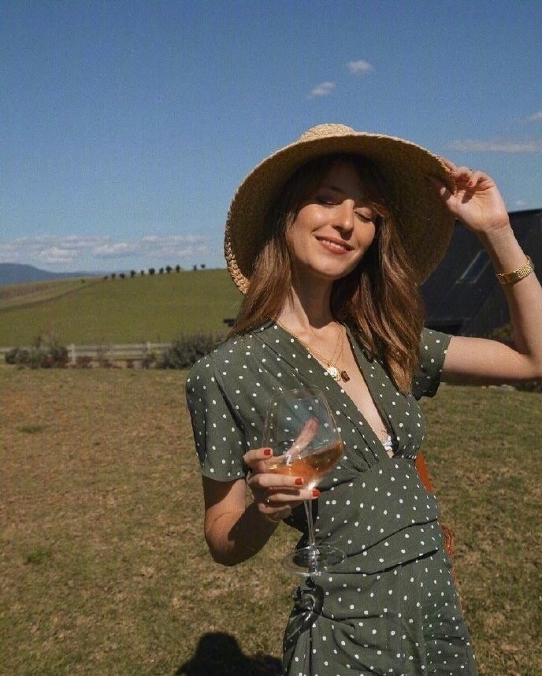
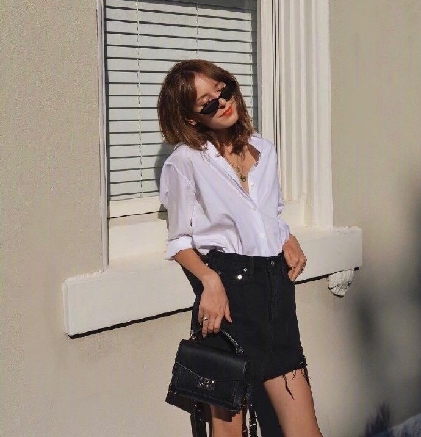
看惯了满大街的“泫雅风”？
不如换个口味，
变身慵懒随性的“法国女孩”。
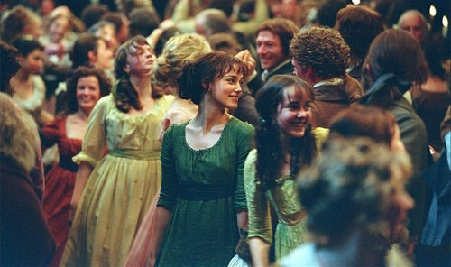
一起看看法式慵懒风的，
必备单品！
↓↓↓
NO.1 Polo领衬衫
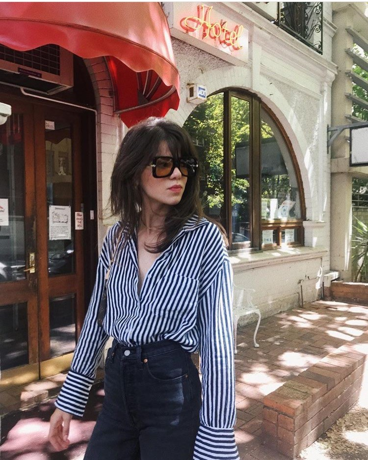
法式穿搭用力过猛就不好啦，
最最最基础款的衬衣，
刚好能打造出随意的效果。
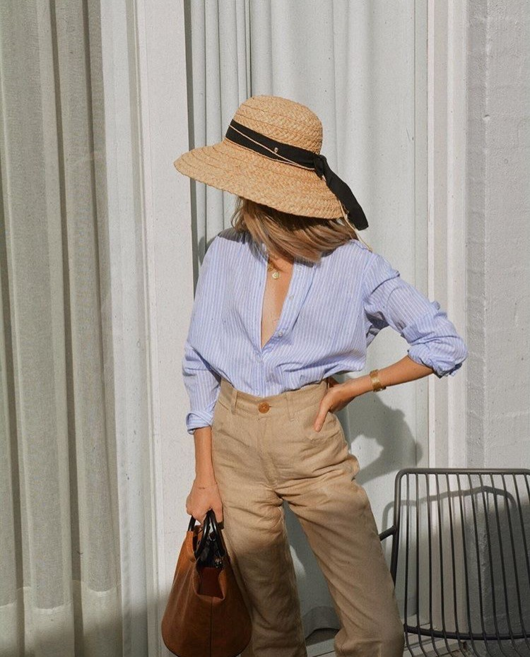
知道你是乖宝宝
但不要再把最上面的扣子也系上了！！！
只用少系几个小扣子,
性感指数立刻up.
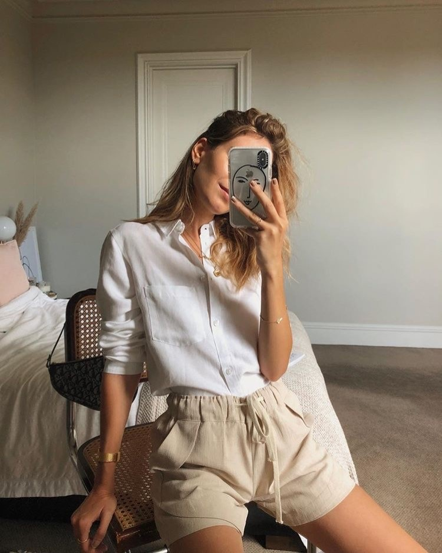
白领上班族最爱的白衬衣，
选择不同的面料，
呈现出来的效果也是不同哒！
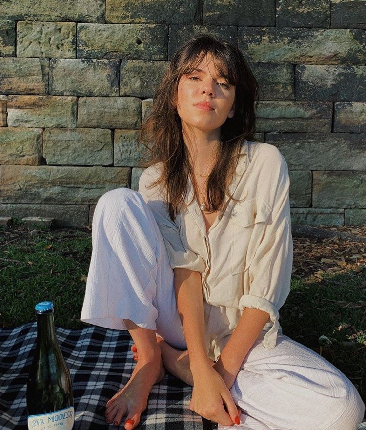
亚麻质地的垂感，
正好是法式的精粹体现。
明明是精心打扮，
却要打理出一幅刚睡醒的样子。
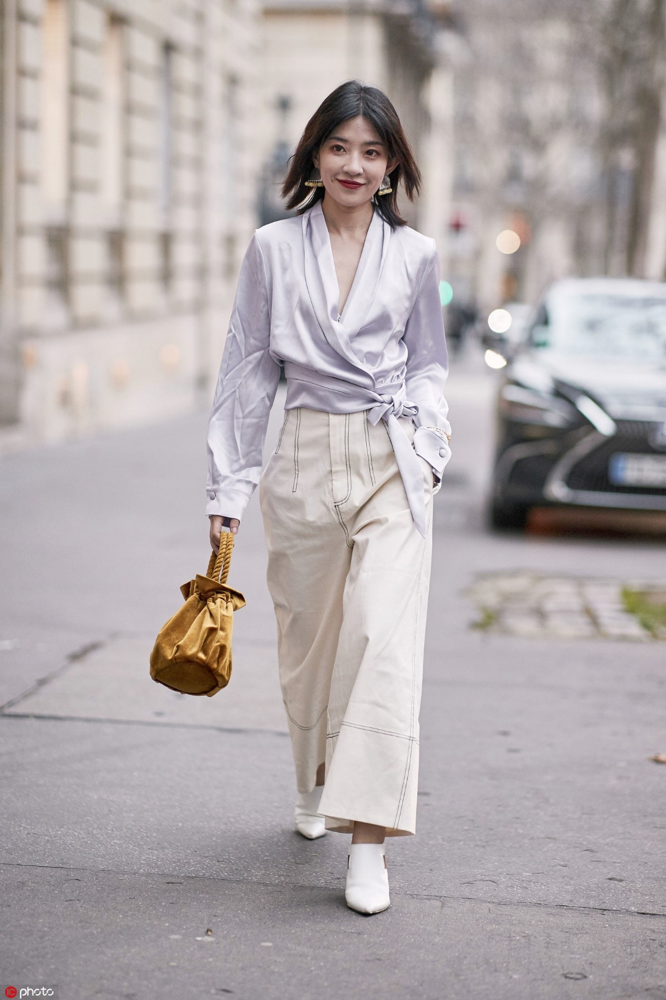
NO.2方领上衣
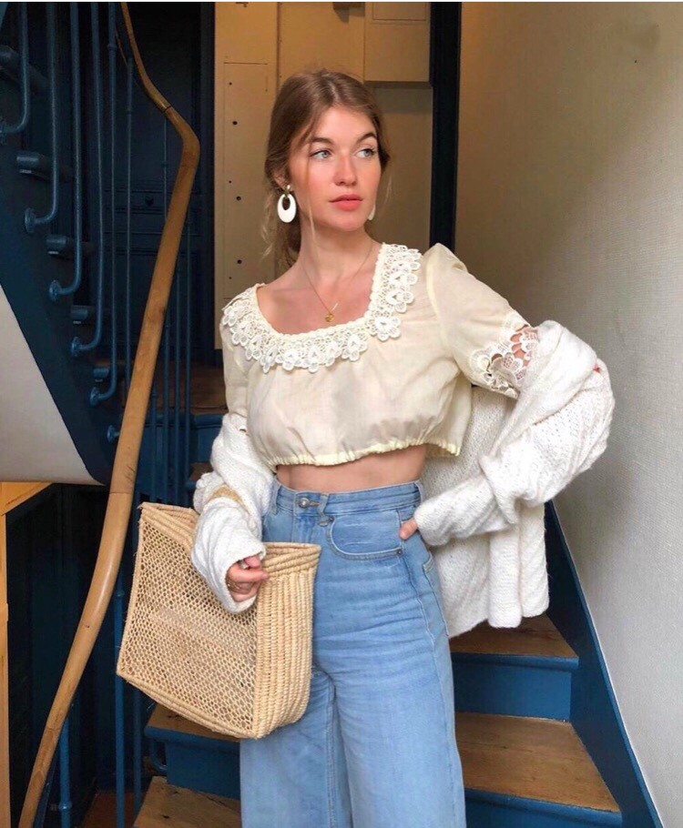
复古的方领
宫廷灯笼袖
都是提升气质的好“帮手”
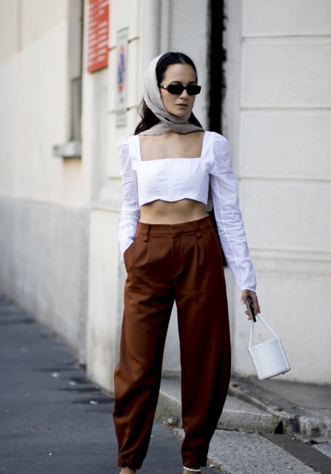
低领可以起到拉长脖子的视觉效果
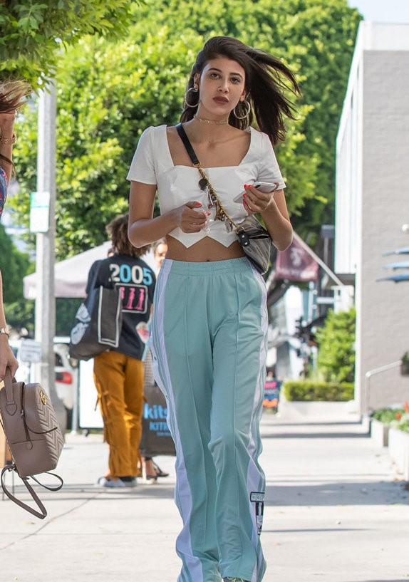
高腰的设计又非常显腿长
这简直就是“矮个子星人”的福音！
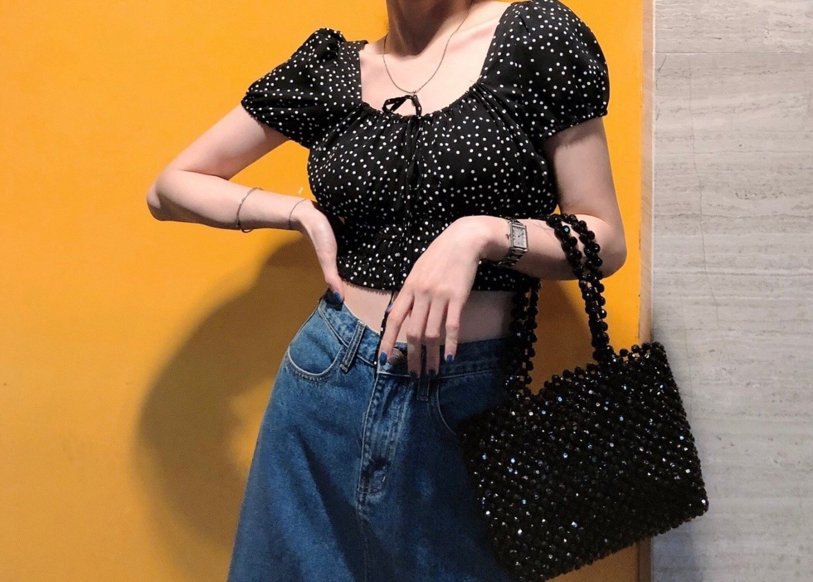
再加上波点元素
优雅中有多一点点俏皮~
NO.3碎花连衣裙
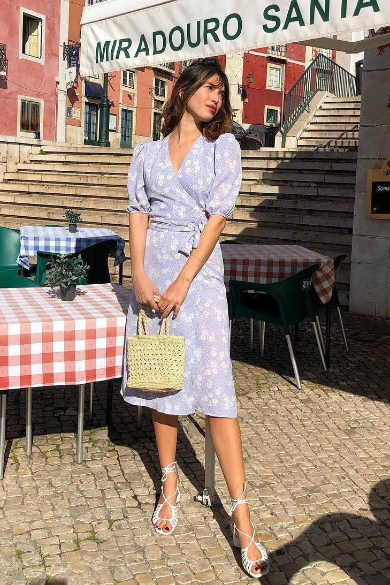
小裙裙才能体现女孩子的温柔，
加上碎花元素，
你就是法国电影里的女主角！
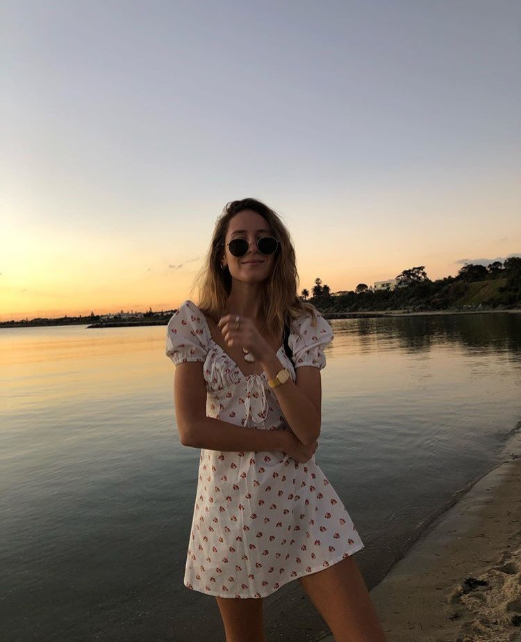
腿短星人可以选择短款，
没有明显的收腰处，
腿长一米五不是梦！
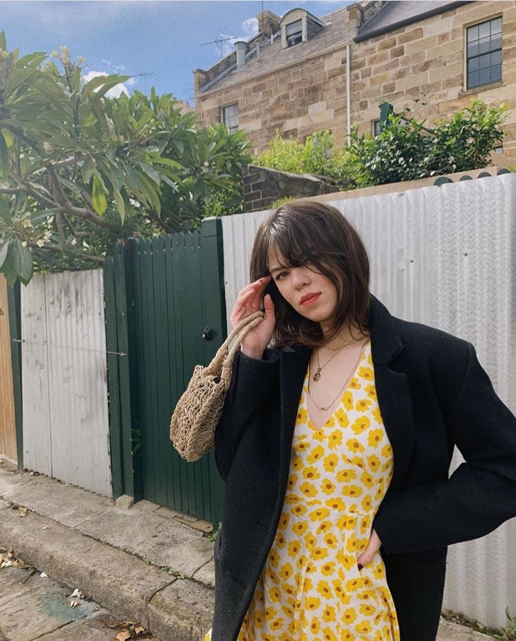
还可以搭配一件外套，
摆脱单调和古板。
NO.4 吊带
慵懒就是要舒服
吊带也尽量选择宽松的版型
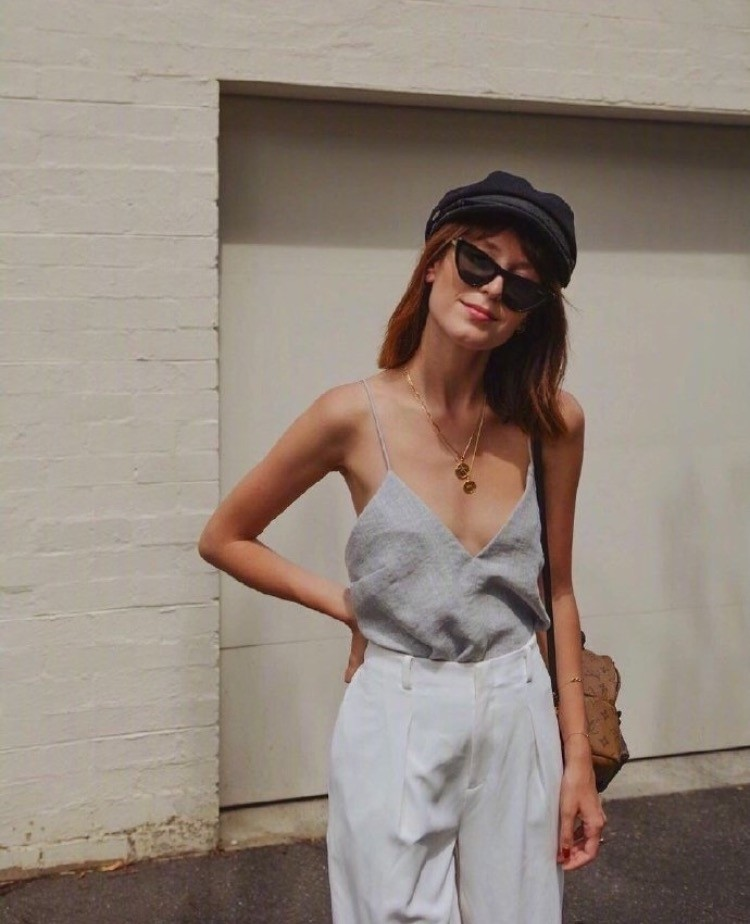
居然还可以做的，
性感和帅气，
兼具！